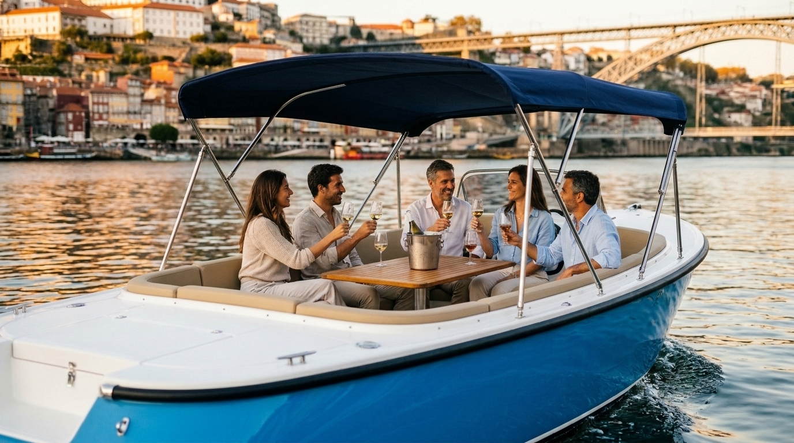

Dois Websites de Luxo
para a Alpha Douro
Ambos atualizados com embarque oficial no Cais da Afurada (rota Afurada → Porto & Pontes → Pôr do Sol no Mar), tipografia editorial do logótipo (Cormorant Garamond), revelação de letras ao fazer scroll e fotografias dedicadas em todos os 6 tours.
 Conceito 01 · Editorial Motion
Conceito 01 · Editorial Motion
Editorial Kinetic & Alta Conversão
Tipografia serifada oficial do logótipo (Cormorant Garamond com itálicos dourados), manifesto da rota Cais da Afurada → Pontes → Mar onde cada letra se ilumina ao fazer scroll, fotografias em cada tour (01–06) e modal de reserva direta.

Conceito 02 · Benetti × Spyker AtelierSuperyacht Atelier & Carta Interativa
Luxo cinematográfico inspirado na Benetti Yachts e Spyker Cars. O barco Amalfi Capri desliza no scroll desde o Cais da Afurada pelas 7 pontes até ao pôr do sol no mar, com pagamento direto em 2 cliques e Boarding Pass 3D.
 Identidade · Brand Kit & Lookbook
Identidade · Brand Kit & Lookbook
Brand Kit Oficial & Material a Bordo
Logótipos oficiais em SVG para download, paleta de cores clicável, boné bordado 3D, t-shirt com selo circular, mantas de lã portuguesa, copos térmicos, kit VIP hotéis 5★ e as 3 propostas do barco real ACHA 6,95m para o Gil escolher.